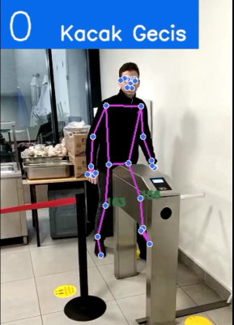
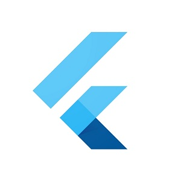

Projelerim

Kacak Gecis Tespit Sistemi
Yapılan projede metro ve tramvaylardan kaçak geçiş tespiti yapılmaktadır. Python dilinin mediapipe modülü kullanılmıştır.
Projeye GitCloud Management
Projede bulut depolama olan Onedrive hesabınıza istediğiniz dosyaların otomatik yüklenmesi sağlanmaktadır.
Projeye Git

SMS Yönlendirme Uygulaması
Yapılan projede telefona gelen SMS'lerin istenen kişilere yönlendirilmesi sağlanmıştır.
Projeye GitSmart Edu Eğitim Sitesi
Sitede öğrencilerin öğretmenlerden ders alması ve öğretmenlerin de ders vermesi sağlanark eğitim platformu oluşturulmuştur.
Projeye Git